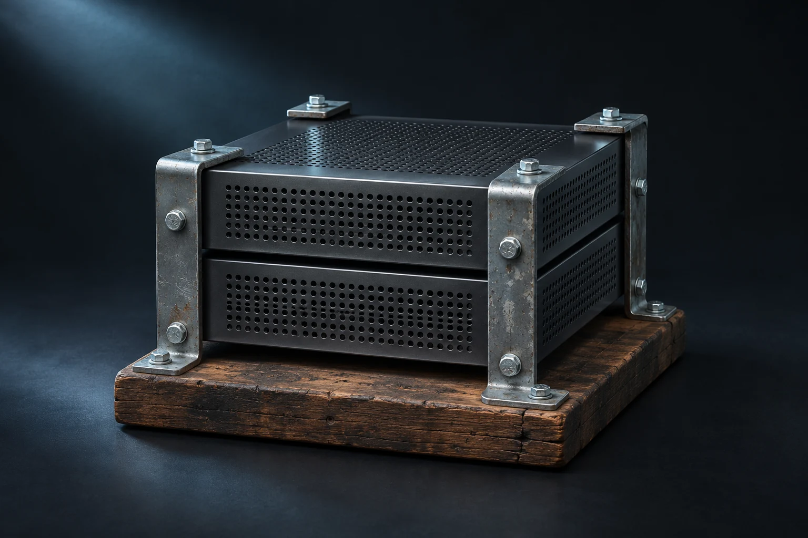
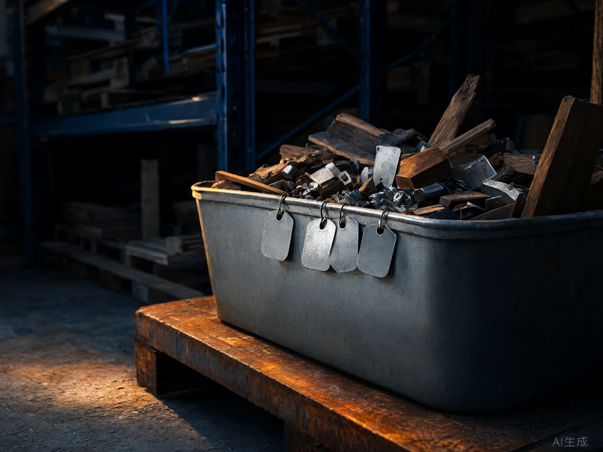

当前可检查
材料去向、计划用量、缺口和导出档案，均可沿示例流程核对。
CASE ARCHIVE
同一批示例旧材料，从护照、候选方案到制作资料与档案，串成可回看的一次再造设计。

CASE GALLERY
选择一个环节，查看对应的视觉与说明。

概念图解
以一块旧木板、四个金属角码、两件电子外壳和六枚螺栓建立示例库存。
TRACEABLE RESULTS
材料去向、计划用量、缺口和导出档案，均可沿示例流程核对。
称重、试制、实际余料与成品各自留证。减碳数据需建立基准和核算边界。